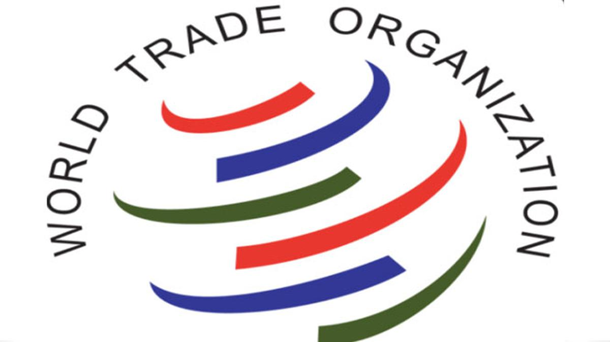
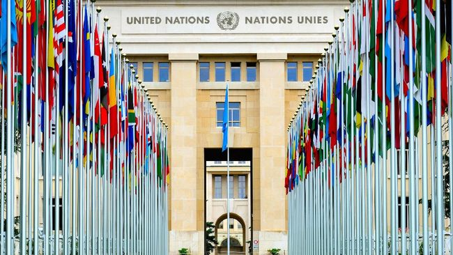

Apa itu Kerjasama Multilateral?
Kerja sama multilateral adalah bentuk kerja sama antara tiga negara atau lebih yang berlangsung di tingkat internasional,
dengan tujuan untuk mengatasi masalah bersama, seperti perdamaian, pembangunan, atau perubahan iklim. Dalam kerja sama ini,
negara-negara saling berkolaborasi untuk mencapainya melalui organisasi atau perjanjian internasional.

Manfaat-Manfaat Kerjasama Multilateral:
Masalah Global dapat terselesaikan karena kerjasama multilateral memungkinkan negara-negara untuk bersama-sama menangani isu-isu besar seperti perubahan iklim, pengentasan kemiskinan, juga konflik internasional.
Kerjasama multilateral dapat memperkuat keamanan dan perdamaian dan juga mengurangi potensi konflik antara negara,
Negara-negara dalam organisasi tersebut dapat saling berbagi pengetahuan, teknologi, dan sumber daya untuk mempercepat pencapaian tujuan pembangunan bersama.
Tantangan Kerjasama Multilateral:
Perbedaan kepentingan antar negara dalam organisasi yang sulit untuk disatukan.
Negara besar dengan kekuatan ekonomi atau politik yang lebih besar mempengaruhi keputusan-keputusan yang diambil, menyebabkan negara kecil merasa kurang diperhatikan atau dirugikan.
Adanya ketidakpercayaan yang muncul saat diskusi.
Contoh-contohnya:
Perserikatan Bangsa-Bangsa (PBB)
Organisasi Perdagangan Dunia (WTO)
Organisasi Perdagangan Dunia (WTO)


.png)
.png)
.png)
.png)
.png)